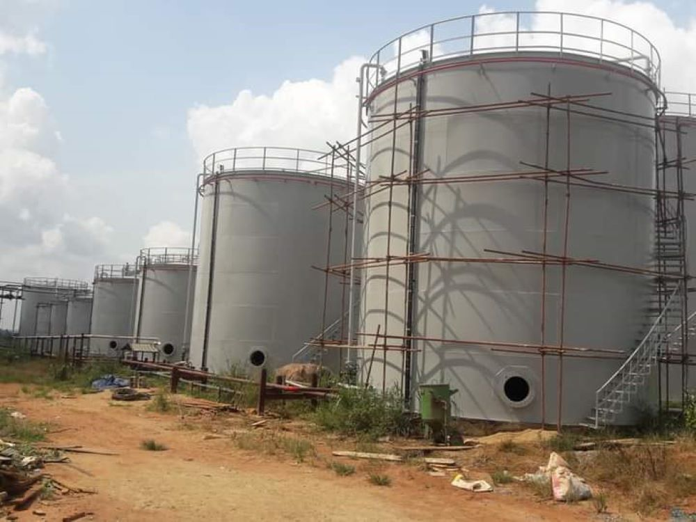
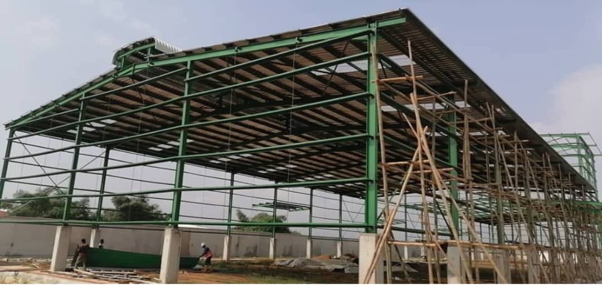

Our Project Gallery:
CONSTRUCTION OF VEGETABLE OIL STORAGE TANKS AND DISPENSING FACILITIES AT THE VEGETABLE OIL REFINERY FOR TOSETT AGRO INDUSTRIES AT ODOGBOLU, OGUN ST.



RAFT FOUNDATION FOR THE CONSTRUCTION OF 2NOS PORTABLE WATER TANKS FOR RCCG.
CONSTRUCTION PHASE OF THE TWO WATER TANKS IN PROGRESS.
PIPEWORKS CONSTRUCTION FOR THE TWO WATER TANKS.
COMPLETION PHASE OF THE CONSTRUCTION OF 2NOS CLEAR WATER TANKS OF RCCG OGUN STATE.